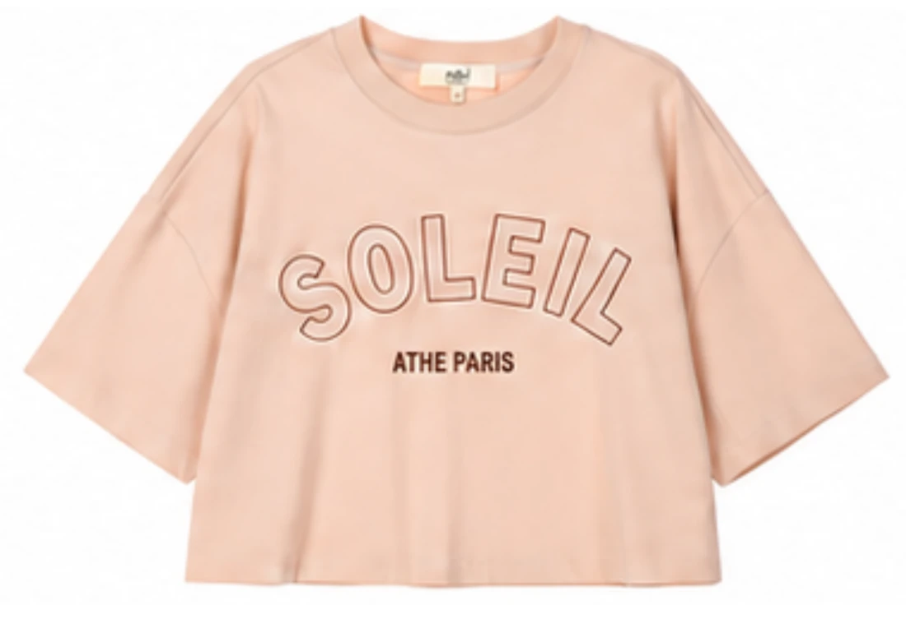
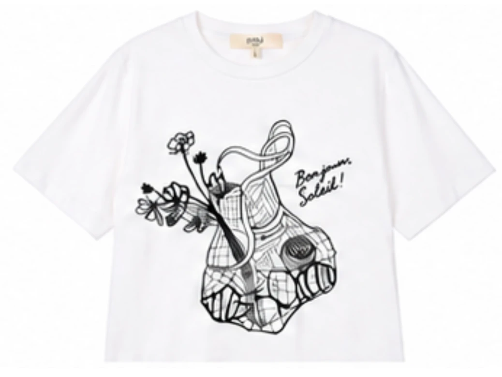
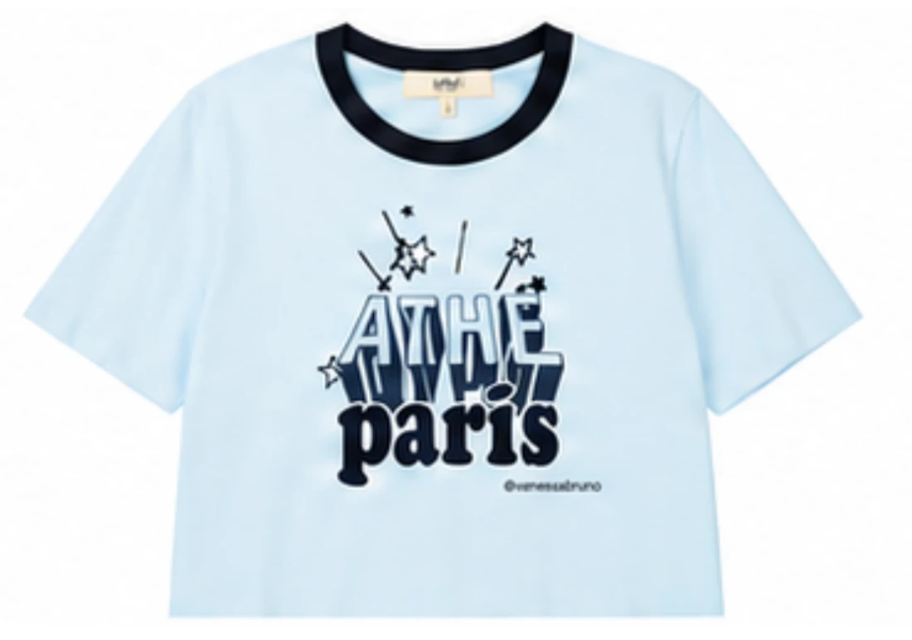
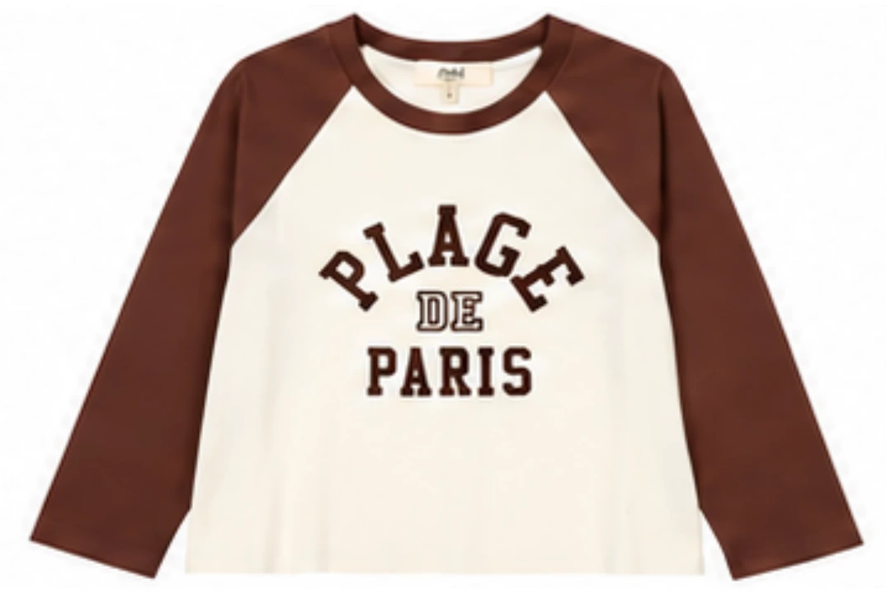
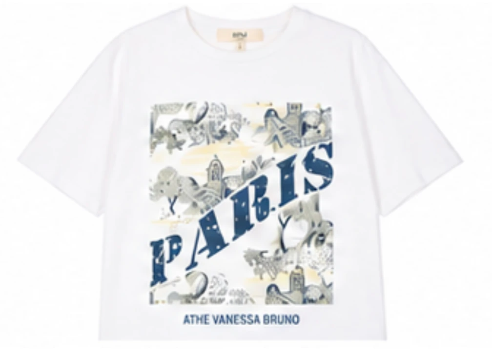
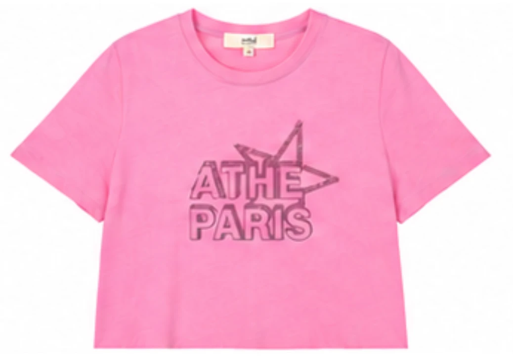

SELECTED
WORKS.
DESIGN — PRODUCTION — AI IN PRACTICE
아이디어에서 옷이 되기까지.
KYUNGEUN MIN의 패션 디자인 아카이브.
PORTFOLIO / 01 — 03
PORTFOLIO / 04 — 06
07 / GRAPHIC EXPRESSION.06 PIECES






Illustrator 그래픽 아트 개발과 프린트·자수 활용 프로젝트 보기 ↗
BEHIND THE WORK
Womenswear, from the first sketch
to the final silhouette.
KYUNGEUN MIN · SEOUL, KOREA
5 YEARS 6 MONTHS
LF